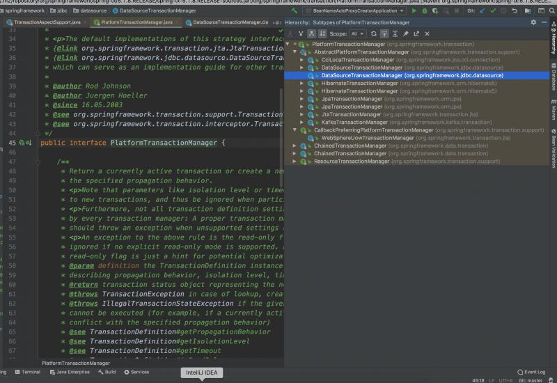

在springboot的自动装配事务里面，InfrastructureAdvisorAutoProxyCreator ,TransactionInterceptor,PlatformTransactionManager这三个bean都被装配进来了，InfrastructureAdvisorAutoProxyCreator已经讲过了，就是一个后置处理器，并且优先级不是很高，而是最低，今天的重点是讲解后面两者之间在事务的扮演角色。TransactionInterceptor作为事务的增强子，扮演着增强处理Spring事务的核心角色。
TransactionInterceptor支撑着整个事务功能的架构，逻辑还是相对复杂的，那么现在我们切入正题来分析此拦截器是如何实现事务特性的。
TransactionDefinition：用于描述隔离级别、超时时间、是否为只读事务和事务传播规则
public interface TransactionDefinition {
int PROPAGATION_REQUIRED = 0;
int PROPAGATION_SUPPORTS = 1;
int PROPAGATION_MANDATORY = 2;
int PROPAGATION_REQUIRES_NEW = 3;
int PROPAGATION_NOT_SUPPORTED = 4;
int PROPAGATION_NEVER = 5;
int PROPAGATION_NESTED = 6;
int ISOLATION_DEFAULT = -1;
int ISOLATION_READ_UNCOMMITTED = 1;
int ISOLATION_READ_COMMITTED = 2;
int ISOLATION_REPEATABLE_READ = 4;
int ISOLATION_SERIALIZABLE = 8;
int TIMEOUT_DEFAULT = -1;
}TransactionStatus：代表一个事务的具体运行状态、以及保存点
public interface TransactionStatus extends SavepointManager, Flushable {
// 判断当前的事务是否是新事务
boolean isNewTransaction();
// 判断该事务里面是否含有保存点
boolean hasSavepoint();
// 这是事务的唯一结果是否进行回滚。因此如果你在外层给try catche住不让事务回滚，就会抛出你可能常见的异常
void setRollbackOnly();
boolean isRollbackOnly();
void flush();
// 不管是commit或者rollback了都算结束了~~~
boolean isCompleted();
}一般都是使用它的实现类DefaultTransactionStatus,它是Spring默认使用的事务状态。
PlatformTransactionManager：一个高层次的接口，看名字就知道是管理事务的
public interface PlatformTransactionManager {
TransactionStatus getTransaction(@Nullable TransactionDefinition var1) throws TransactionException;
void commit(TransactionStatus var1) throws TransactionException;
void rollback(TransactionStatus var1) throws TransactionException;
} public class TransactionInterceptor extends TransactionAspectSupport implements MethodInterceptor, Serializable {
public TransactionInterceptor() {
}
public TransactionInterceptor(PlatformTransactionManager ptm, Properties attributes) {
this.setTransactionManager(ptm);
this.setTransactionAttributes(attributes);
}
public TransactionInterceptor(PlatformTransactionManager ptm, TransactionAttributeSource tas) {
this.setTransactionManager(ptm);
this.setTransactionAttributeSource(tas);
}
//最重要的方法，拦截入口
@Nullable
public Object invoke(MethodInvocation invocation) throws Throwable {
Class<?> targetClass = invocation.getThis() != null ? AopUtils.getTargetClass(invocation.getThis()) : null;
Method var10001 = invocation.getMethod();
invocation.getClass();
return this.invokeWithinTransaction(var10001, targetClass, invocation::proceed);
}
//省略无关代码......
}我们已经知道了，它是个MethodInterceptor，被事务拦截的方法最终都会执行到此增强器身上。
MethodInterceptor是个环绕通知，敲好符合我们的开启、提交、回滚事务等操作，源码分析可以看出，真正做事情的其实还是在父类，它有一个执行事务的模版。
public abstract class TransactionAspectSupport implements BeanFactoryAware, InitializingBean {
private static final Object DEFAULT_TRANSACTION_MANAGER_KEY = new Object();
// currentTransactionStatus() 方法需要使用到它
private static final ThreadLocal<TransactionAspectSupport.TransactionInfo> transactionInfoHolder = new NamedThreadLocal("Current aspect-driven transaction");
protected final Log logger = LogFactory.getLog(this.getClass());
//事务管理器的名称
@Nullable
private String transactionManagerBeanName;
//事务管理器
@Nullable
private PlatformTransactionManager transactionManager;
//事务属性源
@Nullable
private TransactionAttributeSource transactionAttributeSource;
@Nullable
private BeanFactory beanFactory;
// 因为事务管理器可能也会有多个 所以此处做了一个简单的缓存~
private final ConcurrentMap<Object, PlatformTransactionManager> transactionManagerCache = new ConcurrentReferenceHashMap(4);
public TransactionAspectSupport() {
}
@Nullable
protected static TransactionAspectSupport.TransactionInfo currentTransactionInfo() throws NoTransactionException {
return (TransactionAspectSupport.TransactionInfo)transactionInfoHolder.get();
}
//外部调用此Static方法，可议获取到当前事务的状态 从而甚至可议手动来提交、回滚事务
public static TransactionStatus currentTransactionStatus() throws NoTransactionException {
TransactionAspectSupport.TransactionInfo info = currentTransactionInfo();
if (info != null && info.transactionStatus != null) {
return info.transactionStatus;
} else {
throw new NoTransactionException("No transaction aspect-managed TransactionStatus in scope");
}
}
//省略无关代码......
// 这里可以发现，若传入的为Properties 内部是实际使用的是NameMatchTransactionAttributeSource 去匹配的，transactionAttributeSource会被覆盖的哟
public void setTransactionAttributes(Properties transactionAttributes) {
NameMatchTransactionAttributeSource tas = new NameMatchTransactionAttributeSource();
tas.setProperties(transactionAttributes);
this.transactionAttributeSource = tas;
}
// 根据方法和目标类来选择
public void setTransactionAttributeSources(TransactionAttributeSource... transactionAttributeSources) {
this.transactionAttributeSource = new CompositeTransactionAttributeSource(transactionAttributeSources);
}
//省略无关代码......
// 接下来就只剩我们最为核心的处理事务的模版方法了
@Nullable
protected Object invokeWithinTransaction(Method method, @Nullable Class<?> targetClass,
final InvocationCallback invocation) throws Throwable {
// If the transaction attribute is null, the method is non-transactional.
// 获取事务属性源~
TransactionAttributeSource tas = getTransactionAttributeSource();
// 获取该方法对应的事务属性（这个特别重要）
// 不同的事务处理方式使用不同的逻辑。对于声明式事务的处理与编程式事务的处理，重要区别在于事务属性上，因为编程式的事务处理是不需要有事务属性的
final TransactionAttribute txAttr = (tas != null ? tas.getTransactionAttribute(method, targetClass) : null);
// 找到一个合适的事务管理器
final PlatformTransactionManager tm = determineTransactionManager(txAttr);
// 拿到目标方法唯一标识
final String joinpointIdentification = methodIdentification(method, targetClass, txAttr);
if (txAttr == null || !(tm instanceof CallbackPreferringPlatformTransactionManager)) {
// Standard transaction demarcation with getTransaction and commit/rollback calls.
// 看是否有必要创建一个事务，根据`事务传播行为`，做出相应的判断
TransactionInfo txInfo = createTransactionIfNecessary(tm, txAttr, joinpointIdentification);
Object retVal;
try {
// This is an around advice: Invoke the next interceptor in the chain.
// This will normally result in a target object being invoked.
//回调方法执行，执行目标方法（原有的业务逻辑）
retVal = invocation.proceedWithInvocation();
}
catch (Throwable ex) {
// target invocation exception
// 出现异常了，进行回滚（注意：并不是所有异常都会rollback的）
// 备注：此处若没有事务属性 会commit 兼容编程式事务吧
completeTransactionAfterThrowing(txInfo, ex);
throw ex;
}
finally {
//清除信息
cleanupTransactionInfo(txInfo);
}
// 目标方法完全执行完成后，提交事务~~~
commitTransactionAfterReturning(txInfo);
return retVal;
}
else {
//编程式事务处理(CallbackPreferringPlatformTransactionManager) 会走这里
// 原理也差不太多，这里不做详解~~~~
final ThrowableHolder throwableHolder = new ThrowableHolder();
// It's a CallbackPreferringPlatformTransactionManager: pass a TransactionCallback in.
try {
Object result = ((CallbackPreferringPlatformTransactionManager) tm).execute(txAttr, status -> {
TransactionInfo txInfo = prepareTransactionInfo(tm, txAttr, joinpointIdentification, status);
try {
return invocation.proceedWithInvocation();
}
catch (Throwable ex) {
if (txAttr.rollbackOn(ex)) {
// A RuntimeException: will lead to a rollback.
if (ex instanceof RuntimeException) {
throw (RuntimeException) ex;
}
else {
throw new ThrowableHolderException(ex);
}
}
else {
// A normal return value: will lead to a commit.
throwableHolder.throwable = ex;
return null;
}
}
finally {
cleanupTransactionInfo(txInfo);
}
});
// Check result state: It might indicate a Throwable to rethrow.
if (throwableHolder.throwable != null) {
throw throwableHolder.throwable;
}
return result;
}
catch (ThrowableHolderException ex) {
throw ex.getCause();
}
catch (TransactionSystemException ex2) {
if (throwableHolder.throwable != null) {
logger.error("Application exception overridden by commit exception", throwableHolder.throwable);
ex2.initApplicationException(throwableHolder.throwable);
}
throw ex2;
}
catch (Throwable ex2) {
if (throwableHolder.throwable != null) {
logger.error("Application exception overridden by commit exception", throwableHolder.throwable);
}
throw ex2;
}
}
}
// 从容器中找到一个事务管理器
@Nullable
protected PlatformTransactionManager determineTransactionManager(@Nullable TransactionAttribute txAttr) {
if (txAttr != null && this.beanFactory != null) {
// qualifier 就在此处发挥作用了，他就相当于BeanName
String qualifier = txAttr.getQualifier();
if (StringUtils.hasText(qualifier)) {
// 根据此名称 以及PlatformTransactionManager.class 去容器内找
return this.determineQualifiedTransactionManager(this.beanFactory, qualifier); // 若没有指定qualifier 那再看看是否指定了 transactionManagerBeanName
} else if (StringUtils.hasText(this.transactionManagerBeanName)) {
return this.determineQualifiedTransactionManager(this.beanFactory, this.transactionManagerBeanName);
} else {
// 若都没指定，那就不管了。直接根据类型去容器里找 getBean(Class)
// 此处：若容器内有两个PlatformTransactionManager ，那就铁定会报错啦~~~
PlatformTransactionManager defaultTransactionManager = this.getTransactionManager();
if (defaultTransactionManager == null) {
defaultTransactionManager = (PlatformTransactionManager)this.transactionManagerCache.get(DEFAULT_TRANSACTION_MANAGER_KEY);
if (defaultTransactionManager == null) {
defaultTransactionManager = (PlatformTransactionManager)this.beanFactory.getBean(PlatformTransactionManager.class);
this.transactionManagerCache.putIfAbsent(DEFAULT_TRANSACTION_MANAGER_KEY, defaultTransactionManager);
}
}
return defaultTransactionManager;
}
} else {
// 如果这两个都没配置，所以肯定是手动设置了PlatformTransactionManager的，那就直接返回即可
return this.getTransactionManager();
}
}
private PlatformTransactionManager determineQualifiedTransactionManager(BeanFactory beanFactory, String qualifier) {
PlatformTransactionManager txManager = (PlatformTransactionManager)this.transactionManagerCache.get(qualifier);
if (txManager == null) {
txManager = (PlatformTransactionManager)BeanFactoryAnnotationUtils.qualifiedBeanOfType(beanFactory, PlatformTransactionManager.class, qualifier);
this.transactionManagerCache.putIfAbsent(qualifier, txManager);
}
return txManager;
}
private String methodIdentification(Method method, @Nullable Class<?> targetClass, @Nullable TransactionAttribute txAttr) {
String methodIdentification = this.methodIdentification(method, targetClass);
if (methodIdentification == null) {
if (txAttr instanceof DefaultTransactionAttribute) {
methodIdentification = ((DefaultTransactionAttribute)txAttr).getDescriptor();
}
if (methodIdentification == null) {
methodIdentification = ClassUtils.getQualifiedMethodName(method, targetClass);
}
}
return methodIdentification;
}
@Nullable
protected String methodIdentification(Method method, @Nullable Class<?> targetClass) {
return null;
}
// 若有需要 创建一个TransactionInfo (具体的事务从事务管理器里面getTransaction())
protected TransactionAspectSupport.TransactionInfo createTransactionIfNecessary(@Nullable PlatformTransactionManager tm, @Nullable TransactionAttribute txAttr, final String joinpointIdentification) {
//赋值
if (txAttr != null && ((TransactionAttribute)txAttr).getName() == null) {
txAttr = new DelegatingTransactionAttribute((TransactionAttribute)txAttr) {
public String getName() {
return joinpointIdentification;
}
};
}
// 从事务管理器里，通过txAttr拿出来一个TransactionStatus
TransactionStatus status = null;
if (txAttr != null) {
if (tm != null) {
status = tm.getTransaction((TransactionDefinition)txAttr);
} else if (this.logger.isDebugEnabled()) {
this.logger.debug("Skipping transactional joinpoint [" + joinpointIdentification + "] because no transaction manager has been configured");
}
}
// 通过TransactionStatus 等，转换成一个通用的TransactionInfo
return this.prepareTransactionInfo(tm, (TransactionAttribute)txAttr, joinpointIdentification, status);
}
protected TransactionAspectSupport.TransactionInfo prepareTransactionInfo(@Nullable PlatformTransactionManager tm, @Nullable TransactionAttribute txAttr, String joinpointIdentification, @Nullable TransactionStatus status) {
//构造一个TransactionInfo
TransactionAspectSupport.TransactionInfo txInfo = new TransactionAspectSupport.TransactionInfo(tm, txAttr, joinpointIdentification);
if (txAttr != null) {
if (this.logger.isTraceEnabled()) {
this.logger.trace("Getting transaction for [" + txInfo.getJoinpointIdentification() + "]");
}
// 设置事务状态
txInfo.newTransactionStatus(status);
} else if (this.logger.isTraceEnabled()) {
this.logger.trace("No need to create transaction for [" + joinpointIdentification + "]: This method is not transactional.");
}
// 这句话是最重要的，把生成的TransactionInfo并绑定到当前线程的ThreadLocal
txInfo.bindToThread();
return txInfo;
}
//比较简单 只用用事务管理器提交事务即可~~~ 具体的实现逻辑在事务管理器的commit实现里~~
protected void commitTransactionAfterReturning(@Nullable TransactionAspectSupport.TransactionInfo txInfo) {
if (txInfo != null && txInfo.getTransactionStatus() != null) {
if (this.logger.isTraceEnabled()) {
this.logger.trace("Completing transaction for [" + txInfo.getJoinpointIdentification() + "]");
}
txInfo.getTransactionManager().commit(txInfo.getTransactionStatus());
}
}
protected void completeTransactionAfterThrowing(@Nullable TransactionAspectSupport.TransactionInfo txInfo, Throwable ex) {
if (txInfo != null && txInfo.getTransactionStatus() != null) {
if (this.logger.isTraceEnabled()) {
this.logger.trace("Completing transaction for [" + txInfo.getJoinpointIdentification() + "] after exception: " + ex);
}
// 如果有事务属性了，那就调用rollbackOn看看这个异常需不需要回滚
if (txInfo.transactionAttribute != null && txInfo.transactionAttribute.rollbackOn(ex)) {
try {
txInfo.getTransactionManager().rollback(txInfo.getTransactionStatus());
} catch (TransactionSystemException var6) {
this.logger.error("Application exception overridden by rollback exception", ex);
var6.initApplicationException(ex);
throw var6;
} catch (Error | RuntimeException var7) {
this.logger.error("Application exception overridden by rollback exception", ex);
throw var7;
}
} else {
// 编程式事务没有事务属性，那就commit吧
try {
txInfo.getTransactionManager().commit(txInfo.getTransactionStatus());
} catch (TransactionSystemException var4) {
this.logger.error("Application exception overridden by commit exception", ex);
var4.initApplicationException(ex);
throw var4;
} catch (Error | RuntimeException var5) {
this.logger.error("Application exception overridden by commit exception", ex);
throw var5;
}
}
}
}
protected void cleanupTransactionInfo(@Nullable TransactionAspectSupport.TransactionInfo txInfo) {
if (txInfo != null) {
txInfo.restoreThreadLocalStatus();
}
}
private static class ThrowableHolderException extends RuntimeException {
public ThrowableHolderException(Throwable throwable) {
super(throwable);
}
public String toString() {
return this.getCause().toString();
}
}
private static class ThrowableHolder {
@Nullable
public Throwable throwable;
private ThrowableHolder() {
}
}
@FunctionalInterface
protected interface InvocationCallback {
Object proceedWithInvocation() throws Throwable;
}
protected final class TransactionInfo {
// 当前事务 的事务管理器
@Nullable
private final PlatformTransactionManager transactionManager;
// 当前事务 的事务属性
@Nullable
private final TransactionAttribute transactionAttribute;
//joinpoint标识
private final String joinpointIdentification;
//当前事务 的TransactionStatus
@Nullable
private TransactionStatus transactionStatus;
// 重点就是这个oldTransactionInfo字段
// 这个字段保存了当前事务所在的`父事务`上下文的引用，构成了一个链，准确的说是一个有向无环图
@Nullable
private TransactionAspectSupport.TransactionInfo oldTransactionInfo;
public TransactionInfo(@Nullable PlatformTransactionManager transactionManager, @Nullable TransactionAttribute transactionAttribute, String joinpointIdentification) {
this.transactionManager = transactionManager;
this.transactionAttribute = transactionAttribute;
this.joinpointIdentification = joinpointIdentification;
}
public PlatformTransactionManager getTransactionManager() {
Assert.state(this.transactionManager != null, "No PlatformTransactionManager set");
return this.transactionManager;
}
@Nullable
public TransactionAttribute getTransactionAttribute() {
return this.transactionAttribute;
}
public String getJoinpointIdentification() {
return this.joinpointIdentification;
}
//注意这个方法名，新的一个事务status
public void newTransactionStatus(@Nullable TransactionStatus status) {
this.transactionStatus = status;
}
@Nullable
public TransactionStatus getTransactionStatus() {
return this.transactionStatus;
}
public boolean hasTransaction() {
return this.transactionStatus != null;
}
//绑定当前正在处理的事务的所有信息到ThreadLocal
private void bindToThread() {
// 老的事务 先从线程中拿出来，再把新的（也就是当前）绑定进去~~~~~~
this.oldTransactionInfo = (TransactionAspectSupport.TransactionInfo)TransactionAspectSupport.transactionInfoHolder.get();
TransactionAspectSupport.transactionInfoHolder.set(this);
}
//当前事务处理完之后，恢复父事务上下文
private void restoreThreadLocalStatus() {
TransactionAspectSupport.transactionInfoHolder.set(this.oldTransactionInfo);
}
public String toString() {
return this.transactionAttribute != null ? this.transactionAttribute.toString() : "No transaction";
}
}
}
可见它是对PlatformTransactionManager的一个抽象实现。实现Spring的标准事务工作流
这个基类提供了以下工作流程处理：
public abstract class AbstractPlatformTransactionManager implements PlatformTransactionManager, Serializable {
//始终激活事务同步（请参阅事务的传播属性~）
public static final int SYNCHRONIZATION_ALWAYS = 0;
//仅对实际事务（即，不针对由传播导致的空事务）激活事务同步\不支持现有后端事务
public static final int SYNCHRONIZATION_ON_ACTUAL_TRANSACTION = 1;
//永远不激活事务同步
public static final int SYNCHRONIZATION_NEVER = 2;
// 相当于把本类的所有的public static final的变量都收集到此处~~~~
private static final Constants constants = new Constants(AbstractPlatformTransactionManager.class);
// ===========默认值
private int transactionSynchronization = SYNCHRONIZATION_ALWAYS;
// 事务默认的超时时间 为-1表示不超时
private int defaultTimeout = TransactionDefinition.TIMEOUT_DEFAULT;
//Set whether nested transactions are allowed. Default is "false".
private boolean nestedTransactionAllowed = false;
// Set whether existing transactions should be validated before participating（参与、加入）
private boolean validateExistingTransaction = false;
//设置是否仅在参与事务`失败后`将 现有事务`全局`标记为回滚 默认值是true 需要注意~~~
// 表示只要你的事务失败了，就标记此事务为rollback-only 表示它只能给与回滚 而不能再commit或者正常结束了
// 这个调用者经常会犯的一个错误就是：上层事务service抛出异常了，自己把它给try住，并且并且还不throw，那就肯定会报错的：
// 报错信息：Transaction rolled back because it has been marked as rollback-only
// 当然喽，这个属性强制不建议设置为false~~~~~~
private boolean globalRollbackOnParticipationFailure = true;
// 如果事务被全局标记为仅回滚，则设置是否及早失败~~~~
private boolean failEarlyOnGlobalRollbackOnly = false;
// 设置在@code docommit调用失败时是否应执行@code dorollback 通常不需要，因此应避免
private boolean rollbackOnCommitFailure = false;
// 我们发现使用起来有点枚举的意思了，特别是用XML配置的时候 非常像枚举的使用~~~~~~~
// 这也是Constants的重要意义~~~~
public final void setTransactionSynchronizationName(String constantName) {
setTransactionSynchronization(constants.asNumber(constantName).intValue());
}
public final void setTransactionSynchronization(int transactionSynchronization) {
this.transactionSynchronization = transactionSynchronization;
}
//... 省略上面所有字段的一些get/set方法~~~
// 最为重要的一个方法，根据实物定义，获取到一个事务TransactionStatus
@Override
public final TransactionStatus getTransaction(@Nullable TransactionDefinition definition) throws TransactionException {
//doGetTransaction()方法是抽象方法，具体的实现由具体的事务处理器提供（下面会以DataSourceTransactionManager为例子）
Object transaction = doGetTransaction();
//如果没有配置事务属性，则使用默认的事务属性
if (definition == null) {
definition = new DefaultTransactionDefinition();
}
//检查当前线程是否存在事务 isExistingTransaction此方法默认返回false 但子类都复写了此方法
if (isExistingTransaction(transaction)) {
// handleExistingTransaction方法为处理已经存在事务的情况
// 这个方法的实现也很复杂，总之还是对一些传播属性进行解析，各种情况的考虑~~~~~ 如果有新事务产生 doBegin()就会被调用~~~~
return handleExistingTransaction(definition, transaction, debugEnabled);
}
// 超时时间的简单校验~~~~
if (definition.getTimeout() < TransactionDefinition.TIMEOUT_DEFAULT) {
throw new InvalidTimeoutException("Invalid transaction timeout", definition.getTimeout());
}
// 处理事务属性中配置的事务传播特性==============
// PROPAGATION_MANDATORY 如果已经存在一个事务，支持当前事务。如果没有一个活动的事务，则抛出异常
if (definition.getPropagationBehavior() == TransactionDefinition.PROPAGATION_MANDATORY) {
throw new IllegalTransactionStateException("No existing transaction found for transaction marked with propagation 'mandatory'");
}
//如果事务传播特性为required、required_new或nested
else if (definition.getPropagationBehavior() == TransactionDefinition.PROPAGATION_REQUIRED ||
definition.getPropagationBehavior() == TransactionDefinition.PROPAGATION_REQUIRES_NEW ||
definition.getPropagationBehavior() == TransactionDefinition.PROPAGATION_NESTED) {
// 挂起，但是doSuspend()由子类去实现~~~
// 挂起操作，触发相关的挂起注册的事件，把当前线程事物的所有属性都封装好，放到一个SuspendedResourcesHolder
// 然后清空清空一下`当前线程事务`
SuspendedResourcesHolder suspendedResources = suspend(null);
// 此处，开始创建事务~~~~~
try {
boolean newSynchronization = (getTransactionSynchronization() != SYNCHRONIZATION_NEVER);
// //创建一个新的事务状态 就是new DefaultTransactionStatus() 把个属性都赋值上
DefaultTransactionStatus status = newTransactionStatus(
definition, transaction, true, newSynchronization, debugEnabled, suspendedResources);
// 开始事务，抽象方法，由子类去实现~
doBegin(transaction, definition);
//初始化和同步事务状态 是TransactionSynchronizationManager这个类 它内部维护了很多的ThreadLocal
prepareSynchronization(status, definition);
return status;
}
catch (RuntimeException | Error ex) {
//重新开始 doResume由子类去实现
resume(null, suspendedResources);
throw ex;
}
}
// 走到这里 传播属性就是不需要事务的 那就直接创建一个
else {
boolean newSynchronization = (getTransactionSynchronization() == SYNCHRONIZATION_ALWAYS);
// 这个方法相当于先newTransactionStatus,再prepareSynchronization这两步~~~
// 显然和上面的区别是：中间不回插入调用doBegin()方法，因为没有事务 begin个啥~~
return prepareTransactionStatus(definition, null, true, newSynchronization, debugEnabled, null);
}
}
// 再看看commit方法
@Override
public final void commit(TransactionStatus status) throws TransactionException {
//如果是一个已经完成的事物，不可重复提交
if (status.isCompleted()) {
throw new IllegalTransactionStateException("Transaction is already completed - do not call commit or rollback more than once per transaction");
}
DefaultTransactionStatus defStatus = (DefaultTransactionStatus) status;
// 如果已经标记为了需要回滚，那就执行回滚吧
if (defStatus.isLocalRollbackOnly()) {
processRollback(defStatus, false);
return;
}
// shouldCommitOnGlobalRollbackOnly这个默认值是false，目前只有JTA事务复写成true了
// isGlobalRollbackOnly：是否标记为了全局的RollbackOnly
if (!shouldCommitOnGlobalRollbackOnly() && defStatus.isGlobalRollbackOnly()) {
processRollback(defStatus, true);
return;
}
// 提交事务 这里面还是挺复杂的，会考虑到还原点、新事务、事务是否是rollback-only之类的~~
processCommit(defStatus);
}
// rollback方法 里面doRollback方法交给子类去实现~~~
@Override
public final void rollback(TransactionStatus status) throws TransactionException {
DefaultTransactionStatus defStatus = (DefaultTransactionStatus) status;
processRollback(defStatus, false);
}
}从这个抽象类源码分析可以看出，它绝对是一个非常非常典型的模版实现，各个方法实现都是这样。自己先提供实现模版，很多具体的实现方案都开放给子类，比如begin,suspend, resume,commit,rollback等，相当于留好了众多的连接点
// 它还实现了ResourceTransactionManager接口，提供了getResourceFactory()方法
public class DataSourceTransactionManager extends AbstractPlatformTransactionManager implements ResourceTransactionManager, InitializingBean {
// 显然它管理的就是DataSource 而JTA分布式事务管理可能就是各种各样的数据源了
@Nullable
private DataSource dataSource;
// 不要强制标记为ReadOnly
private boolean enforceReadOnly = false;
// JDBC默认是允许内嵌的事务的
public DataSourceTransactionManager() {
setNestedTransactionAllowed(true);
}
public DataSourceTransactionManager(DataSource dataSource) {
this();
setDataSource(dataSource);
// 它自己的InitializingBean也是做了一个简单的校验而已~~~
afterPropertiesSet();
}
// 手动设置数据源
public void setDataSource(@Nullable DataSource dataSource) {
// 这步处理有必要
// TransactionAwareDataSourceProxy是对dataSource 的包装
if (dataSource instanceof TransactionAwareDataSourceProxy) {
this.dataSource = ((TransactionAwareDataSourceProxy) dataSource).getTargetDataSource();
} else {
this.dataSource = dataSource;
}
}
//Return the JDBC DataSource
@Nullable
public DataSource getDataSource() {
return this.dataSource;
}
// @since 5.0 Spring5.0提供的方法 其实还是调用的getDataSource() 判空了而已
protected DataSource obtainDataSource() {
DataSource dataSource = getDataSource();
Assert.state(dataSource != null, "No DataSource set");
return dataSource;
}
// 直接返回的数据源~~~~
@Override
public Object getResourceFactory() {
return obtainDataSource();
}
...
// 这里返回的是一个`DataSourceTransactionObject`
// 它是一个`JdbcTransactionObjectSupport`，所以它是SavepointManager、实现了SmartTransactionObject接口
@Override
protected Object doGetTransaction() {
DataSourceTransactionObject txObject = new DataSourceTransactionObject();
txObject.setSavepointAllowed(isNestedTransactionAllowed());
// 这个获取有意思~~~~相当于按照线程来的~~~
ConnectionHolder conHolder = (ConnectionHolder) TransactionSynchronizationManager.getResource(obtainDataSource());
txObject.setConnectionHolder(conHolder, false);
return txObject;
}
// 检查当前事务是否active
@Override
protected boolean isExistingTransaction(Object transaction) {
DataSourceTransactionObject txObject = (DataSourceTransactionObject) transaction;
return (txObject.hasConnectionHolder() && txObject.getConnectionHolder().isTransactionActive());
}
// 这是一个核心内容了，里面逻辑需要分析分析~~~
@Override
protected void doBegin(Object transaction, TransactionDefinition definition) {
DataSourceTransactionObject txObject = (DataSourceTransactionObject) transaction;
Connection con = null;
try {
if (!txObject.hasConnectionHolder() || txObject.getConnectionHolder().isSynchronizedWithTransaction()) {
// 从DataSource里获取一个连接（这个DataSource一般是有连接池的~~~）
Connection newCon = obtainDataSource().getConnection();
// 把这个链接用ConnectionHolder包装一下~~~
txObject.setConnectionHolder(new ConnectionHolder(newCon), true);
}
txObject.getConnectionHolder().setSynchronizedWithTransaction(true);
con = txObject.getConnectionHolder().getConnection();
// 设置isReadOnly、设置隔离界别等~
Integer previousIsolationLevel = DataSourceUtils.prepareConnectionForTransaction(con, definition);
txObject.setPreviousIsolationLevel(previousIsolationLevel);
// 这里非常的关键，先看看Connection 是否是自动提交的
// 如果是 就con.setAutoCommit(false) 要不然数据库默认没执行一条SQL都是一个事务，就没法进行事务的管理了
if (con.getAutoCommit()) {
txObject.setMustRestoreAutoCommit(true);
con.setAutoCommit(false);
}
// ====因此从这后面，通过此Connection执行的所有SQL语句只要没有commit就都不会提交给数据库的=====
// 这个方法特别特别有意思 它自己`Statement stmt = con.createStatement()`拿到一个Statement
// 然后执行了一句SQL：`stmt.executeUpdate("SET TRANSACTION READ ONLY");`
// 所以，所以：如果你仅仅只是查询。把事务的属性设置为readonly=true Spring对帮你对SQl进行优化的
// 需要注意的是：readonly=true 后，只能读，不能进行dml操作）（只能看到设置事物前数据的变化，看不到设置事物后数据的改变）
prepareTransactionalConnection(con, definition);
txObject.getConnectionHolder().setTransactionActive(true);
int timeout = determineTimeout(definition);
if (timeout != TransactionDefinition.TIMEOUT_DEFAULT) {
txObject.getConnectionHolder().setTimeoutInSeconds(timeout);
}
// Bind the connection holder to the thread.
// 这一步：就是把当前的链接 和当前的线程进行绑定~~~~
if (txObject.isNewConnectionHolder()) {
TransactionSynchronizationManager.bindResource(obtainDataSource(), txObject.getConnectionHolder());
}
} catch (Throwable ex) {
// 如果是新创建的链接，那就释放~~~~
if (txObject.isNewConnectionHolder()) {
DataSourceUtils.releaseConnection(con, obtainDataSource());
txObject.setConnectionHolder(null, false);
}
throw new CannotCreateTransactionException("Could not open JDBC Connection for transaction", ex);
}
}
// 真正提交事务
@Override
protected void doCommit(DefaultTransactionStatus status) { DataSourceTransactionObject txObject = (DataSourceTransactionObject) status.getTransaction();
// 拿到链接 然后直接就commit了
Connection con = txObject.getConnectionHolder().getConnection();
try {
con.commit();
} catch (SQLException ex) {
throw new TransactionSystemException("Could not commit JDBC transaction", ex);
}
}
//doRollback()方法也类似 这里不再细说
}事务属性readonly=true后，只能读操作）（只能看到设置事物前数据的变化，看不到设置事物后数据的改变） 但是通过源码我发现，你只设置@Transactional(readOnly = true)这样是不够的，还必须在配置DataSourceTransactionManager的时候，来这么一句dataSourceTransactionManager.setEnforceReadOnly(true)，最终才会对你的只读事务进行优化~~~~
其实如果仅仅只是设置@Transactional(readOnly = true)，最终会把这个Connection设置为只读：con.setReadOnly(true); 它表示将此连接设置为只读模式，作为驱动程序启用数据库优化的提示。 将链接设置为只读模式通知数据库后，数据库会对做自己的只读优化。但是，这对数据库而言不一定对于数据库而言这就是readonly事务，这点是非常重要的。（因为毕竟一个事务内可能有多个链接.